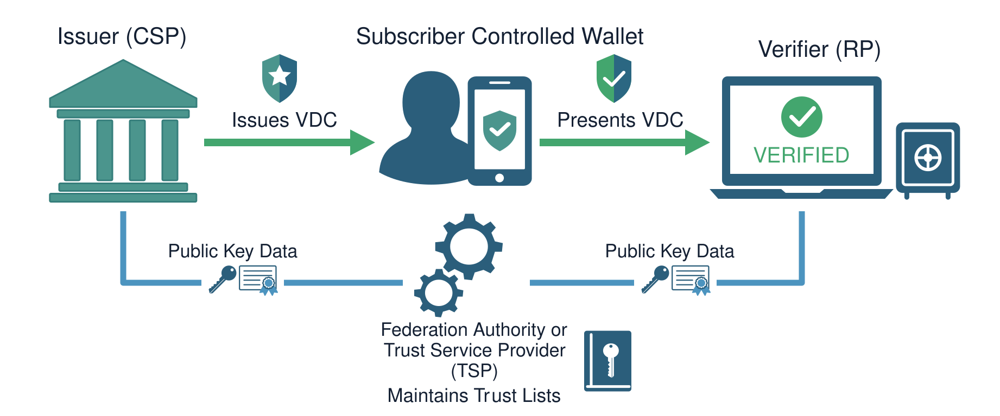

Subscriber Controlled Wallets
Subscriber Controlled Wallets (or Digital Wallets) are software apps on smartphones and other devices that securely store electronic versions of things like credit cards, ID cards, passports, travel passes, event tickets, and membership cards. Like physical wallets, digital wallets allow their owners to control how and to whom they present their information. And while different types of wallets exist, NIST’s Digital Identity Guidelines deal with the types of digital wallets that are used to manage verifiable digital credentials (aka Attribute Bundles), such as Mobile Driver’s Licenses.
Verifiable digital credentials (called “Attribute Bundles” in 800-63-4) are secure, tamper-proof digital versions of physical documents—like driver’s licenses, diplomas, or employee IDs—that adhere to international standards. They allow individuals to control their own identity data in digital wallets and present cryptographically signed assertions of this data that can be independently verified without a direct relationship or communication to the issuing source, such as a State DMV. Verifiable credentials are not just photos or scanned versions of the actual documents; instead, they are bundles of attributes - individual pieces of information about a person, like their date of birth - that are signed by the issuer after an identity proofing process or verification event, cryptographically bound to a specific device, and can be asserted in a way that enhances privacy and security.
Subscriber Controlled Wallet Model

Characteristics of VDC


Potential Security Gains
Cryptographically provable, issuer-signed claims & attributes.
Biometric issuance with authoritative reference data.
Bound to a user-controlled device.
Able to leverage local authentication via biometric or PIN.
Able to be revoked or invalidated.
Phishing resistance through proximity checks.
Potential Customer Experience Gains
Less friction for customers than document scanning and selfie checks.
Local authentication using mechanisms that are familiar and intuitive for users.
Selective disclosure of only necessary information.
Notice and consent during presentation.
Independent verification.
Pre-population of most critical information.
Real World Examples of VDCs

Mobile Drivers license(mDL) – An mDL is a digital representation of your physical driver’s license. Defined by ISO Standards (ISO/IEC 18013-5) it contains issuer-signed, device-bound data about the individual and their driving privileges. mDLs are available in over 20 states and territories and accepted at over 250 TSA checkpoints around the country [1].

EU Personal Identity Data – Starting in 2026, EU Member States will begin issuing EU Digital Identity (eID) Wallets to their citizens, residents, and businesses. These wallets will contain the Personal Identity Data, a set of attributes about an individual and issued by an authoritative source in accordance with EU or member state laws. They are expected to be issued as ISO/IEC 18013-5 and Selective Disclosure-JSON Web Token digital credentials [2].

Derived Digital Passports – Derived digital passports are digital versions of physical passports. Derived digital passports make use of the embedded cryptographically signed data in e-Passports to read, validate, and then generate a derived digital credential. These are primarily offered by wallet providers such as Google, Apple, and Clear. They are accepted at TSA checkpoints.
Uses in NIST’s Digital Identity Guidelines

Digital Evidence
NIST SP 800-63A-4 allows verifiable digital credentials, such as mDLs, stored in digital wallets to be used as identity evidence during the identity proofing and verification processes. Because verifiable credentials held in subscriber-controlled wallets contain issuer-signed data that can be independently and cryptographically validated, they are considered superior identity evidence.

Authentication
Thanks to the built-in cryptographic security features and local activation factors (biometrics and PINs) associated with smartphones and other devices, verifiable digital credentials contained in a subscriber-controlled wallet can be used to authenticate to online services. When implemented consistent with the requirements provided in NIST SP 800-63B-4 verifiable digital credentials, can serve as multi-factor cryptographic authenticators.
Note: mDLs are not recommended for routine authentication; they are better suited as identity evidence or for account recovery and other low-frequency events. For discussion of the challenges, see Section 6.2.7 of NIST SP 1800-42A, Digital Identities—Mobile Driver’s License (mDL) (initial public draft).
In each instance the verifiable digital credential and the subscriber-controlled wallet that holds them, must use a secure presentation protocol consistent with NIST SP 800-63C such as ISO/IEC 18013-7 Annex C or Open Identity Foundation’s OpenID for Verifiable Presentations High Assurance Interoperability Profile.
NIST Resources
NCCoE mDL Project Pages Site: https://pages.nist.gov/nccoe-mdl-project-static-website/index.html#
NIST SP 1800-42: Digital Identities—Mobile Driver’s License (mDL) Accelerating Development and Adoption of Digital Identity for Financial Institutions: https://www.nccoe.nist.gov/sites/default/files/2026-03/nist-sp-1800-42a-ipd_0.pdf
Blog Series:
Community Resources
Credential Test Site: https://digital-credentials.dev/?
Digital Credentials Developer Site: https://digitalcredentials.dev/
Representations and Warranties
Certain commercial entities, equipment, or materials may be identified in this Web site or linked Web sites in order to support Framework understanding and use. Such identification is not intended to imply recommendation or endorsement by NIST, nor is it intended to imply that the entities, materials, or equipment are necessarily the best available for the purpose.